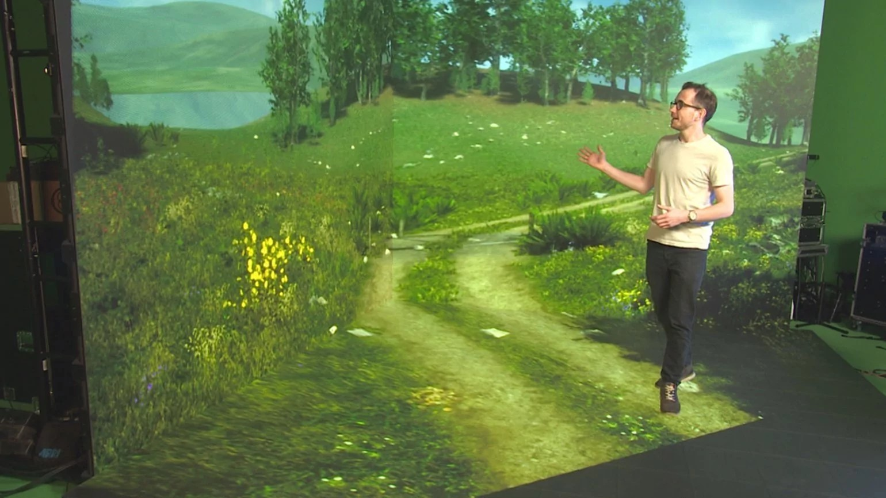
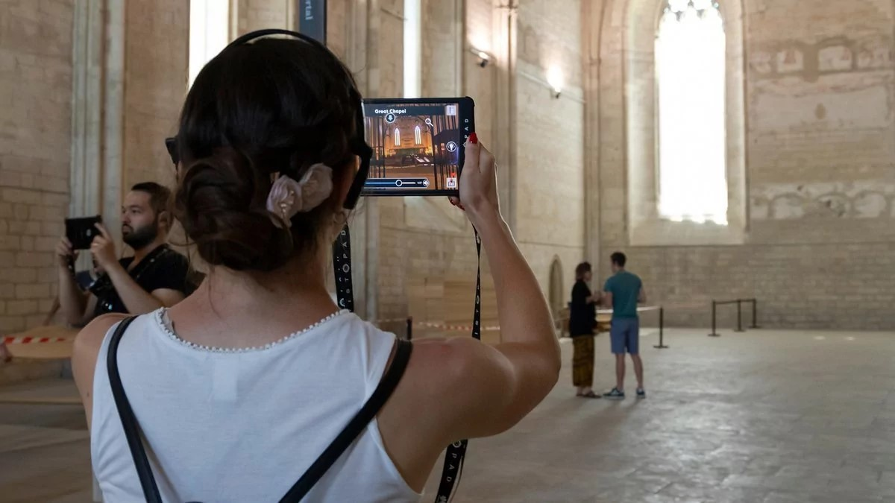
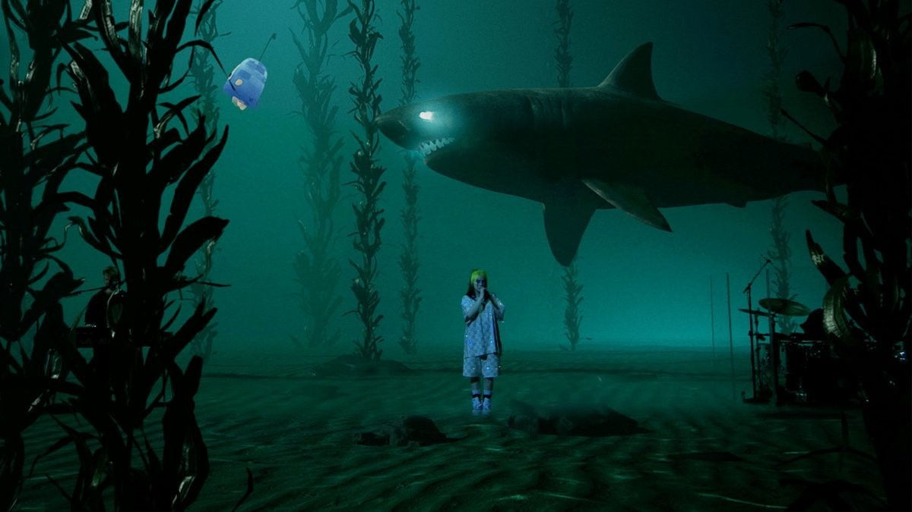
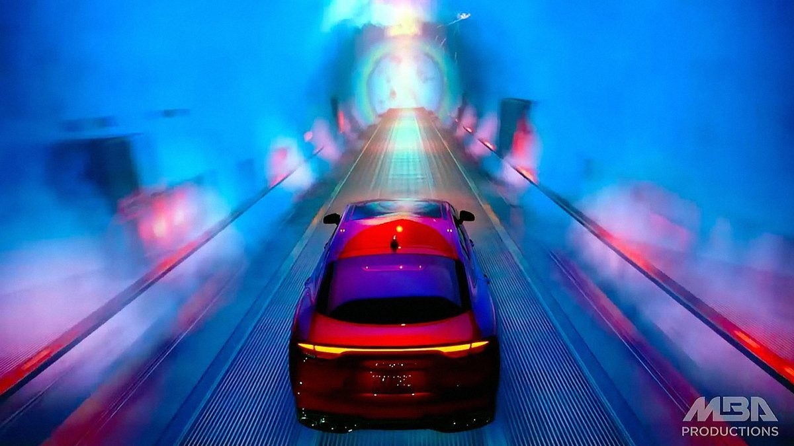
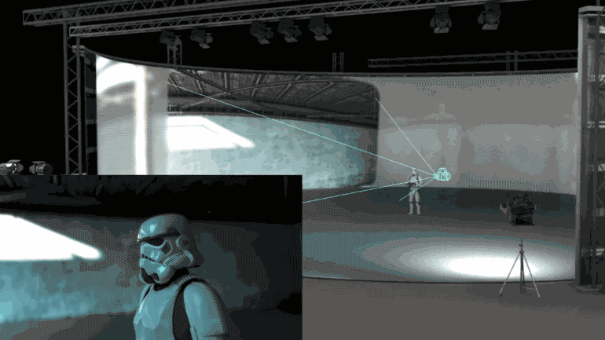

-РАСШИРЕННАЯ РЕАЛЬНОГСТЬ-

XR также использует AR-технологии (Augmented Reality, дополненная реальность) — они позволяют внедрять объекты, которые перекрывают актёра. Например, в виртуальной студии появляется автомобиль, с которым человек может взаимодействовать: он заходит за него, обходит вокруг — и у зрителя сохраняется ощущение его присутствия в кадре. Датчики на камерах позволяют всегда снимать объекты дополненной реальности в нужной перспективе, чтобы зрителям всё казалось максимально правдоподобным. Куда бы камера ни повернулась, датчики подстраивают графические элементы в кадре под нужный ракурс.

Чаще всего XR используют в прямых трансляциях, онлайн-концертах, виртуальных студиях телепрограмм и презентациях продуктов. Если вместо хромакея («зелёного экрана») использовать LED-экран, можно добиться эффекта реалистичного света. Например, на экранах появляется закатное солнце — и свет от них даёт правильные блики на объекты и людей вокруг. Эту же технологию используют и в кино, но в усечённом варианте. Для кинопроизводства немаловажен тот факт, что благодаря XR участники видят на съёмочной площадке не просто хромакей, а оператор и режиссер могут поправить картинку в прямом эфире. Однако в кино обычно не используют пол из LED-экранов, а вместо него ставят реальные декорации — землю, элементы интерьера и другие предметы.

Технология XR активно применяется и на презентациях автомобилей. Американская креативная студия MBA создает моушн-дизайн для Kia, Honda и Hyundai. В презентациях благодаря XR автомобиль движется, но на самом деле на экранах просто меняются декорации.

Раньше производителям кино приходилось работать на фоне зелёного экрана. Сейчас с помощью XR и огромных LED-экранов на съёмочной площадке выставляют уже готовые 3D-изображения, чтобы перенести героев в виртуальную реальность. Lucasfilm сняла сериал «Мандалорец» по вселенной «Звёздных войн» полностью на XR.

В кинопроизводстве такая технология помогает сэкономить время на постпродакшне, а актерам — глубже погрузиться в роль. С помощью XR сняли и многие сцены в фильмах «Книга джунглей»(2016) и «Король лев» (2019).